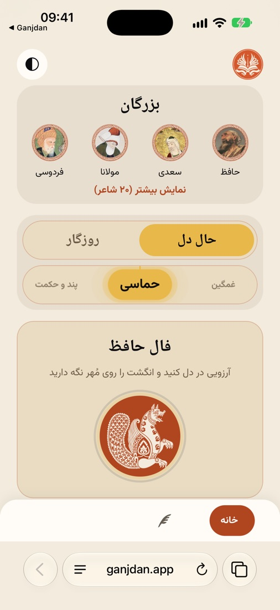
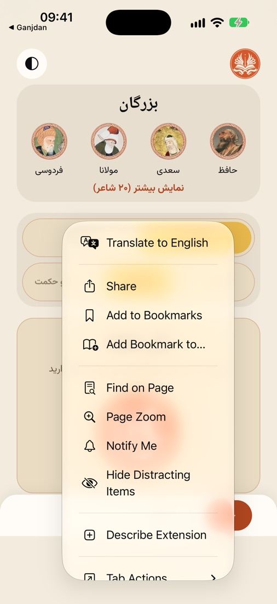
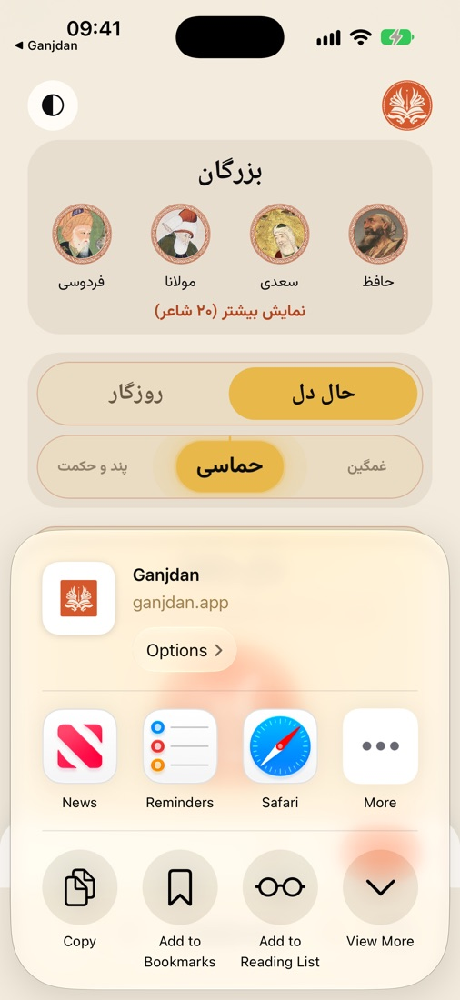
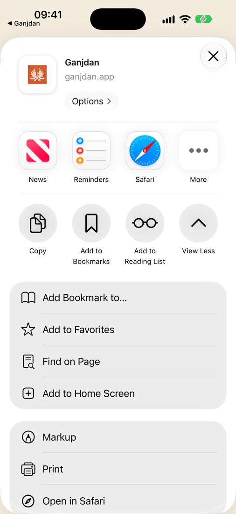
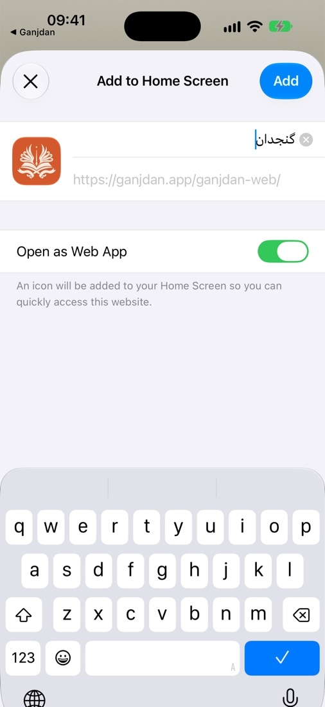
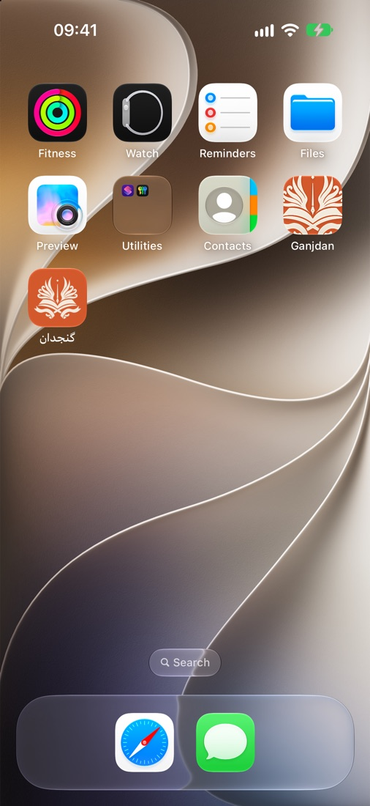

نصب گنجدان
گنجدان هنوز در اپاستور و گوگل پلی نیست و آنجا که بیاید، پیوندش همینجا میآید. تا آن روز، همین نسخه را میتوانید مثل یک اپ روی گوشی خود نصب کنید: آیکون روی صفحهٔ اصلی مینشیند، تمامصفحه باز میشود و پس از یک بار باز شدن با اینترنت، بیاینترنت هم کار میکند. هیچ حسابی لازم نیست و رایگان است.
آیفون و آیپد (با سافاری)
باید در Safari باز شود، نه در کروم یا مرورگرِ درونِ اینستاگرام و تلگرام؛ فقط سافاری این گزینه را دارد. اگر پیوند را از یک اپ دیگر باز کردید، «باز کردن در Safari» را بزنید.






اندروید (با کروم)
- در Chrome نشانی ganjdan.app/ganjdan-web را باز کنید.
- روی سهنقطهٔ بالای صفحه بزنید.
- «نصب برنامه» (Install app) یا «افزودن به صفحهٔ اصلی» (Add to Home screen) را بزنید و تأیید کنید.
- آیکون گنجدان کنار اپهای دیگر مینشیند.
اگر گزینهٔ نصب را ندیدید، یک بار صفحه را تازه کنید و ۱۰ ثانیه صبر کنید؛ کروم پس از چند لحظه آن را نشان میدهد. مرورگرهای دیگر (سامسونگ اینترنت، فایرفاکس) هم همین گزینه را در فهرستشان دارند.
بیاینترنت بخوانید
پس از نصب، در اپ از «شاعران» دیوان هر شاعر را یک بار دریافت کنید؛ بعد از آن خواندن و جستجو بیاینترنت هم کار میکند. خوانشهای صوتی و تعبیر فال به اینترنت نیاز دارند.
پرسشها
چرا در اپاستور و گوگل پلی نیست؟
ساختش در دست است. نسخهٔ گوگل پلی پس از آزمایش بسته میآید و پس از آن اپاستور. هر دو که آمدند، همین صفحه بهروز میشود.
چه فرقی با اپ فروشگاه دارد؟
همین اپ است، با همین ظاهر و همین شعرها. تفاوت: چند قابلیت سیستمی (مثل لرزشهای ظریف فال و صدای فال هنگام حالت بیصدا) روی نسخهٔ وب کامل نیست.
چهطور پاکش کنم؟
مثل هر اپ دیگر: آیکون را نگه دارید و «حذف» را بزنید.